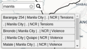

Welcome to the Critical Events and Monitoring System
Map of COVID-19 Related Incidents!
Map of COVID-19 Related Incidents!
In response to the COVID-19 situation, International Alert Philippines expanded its Critical Events Monitoring System (CEMS) to monitor tensions and violence related to the pandemic. The reports are visually presented through maps with the objective of not only information dissemination but also for data utilization in terms of programming among local governments to effectively respond to the tensions and pressures which may lead to violent conflict.
How to Use:
Click on the buttons on the
control panel to switch to different map
of overlays
Check the boxes to toggle the
displayed reported incidents related to
COVID-19

Type in the box to search
trough the data.
Interact with the map by
zooming in or out, adjusting the overlay
opacity, and changing basemaps.
Click anywhere to close
CRITICAL EVENTS
MONITORING SYSTEM
MAP OF COVID-19 RELATED INCIDENTS
Boundaries
Administrative Boundaries of the Phillipines
Click on the buttons to see regional, provincial, or municipal borders.
Click on the buttons to see regional, provincial, or municipal borders.
Region
Province
Municipality
Barangay
None
CEMS
Incidents
These incidents were reported by ,asda
These incidents were reported by ,asda
Tension
Tooltip text
Violence
Tooltip text
CEMS Coverage
Tooltip text
DOH
COVID-19 Cases
Tooltip text3
asdasd
Tooltip text3
asdasd
Don't show
Show
share this page on